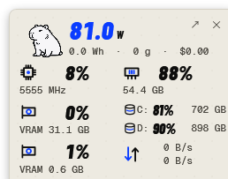
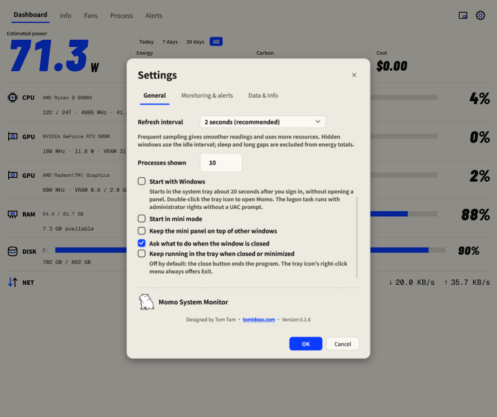

Mini panel & system tray
Keep the readings beside your work and decide how Momo behaves in the background.

Open and position the Mini panel
- Select the Mini button beside the Settings gear.
- Drag the panel background to move it. Buttons and disk scrollbars retain their own actions.
- Read percentages as the main values and clocks or used memory/capacity beneath them. The disk rows stay in volume order.
- Double-click the background or select Open Dashboard to return.
In Settings → General, enable Keep the mini panel on top of other windows if desired. Enable Start in mini mode for manual launches. The panel position is remembered.
Momo’s animation
Showing Mini or moving the pointer over an idle panel plays the hover animation once. Dragging plays its separate motion once. Playback returns to a resting pose. Reduce motion keeps the mascot static.
Keep monitoring in the tray
In Settings → General, enable Keep running in the tray when closed or minimized, then press OK. Hiding the window continues sampling and alerts. Double-click the system-tray icon to open Momo; right-click it for the tray menu. Use Exit to stop monitoring and save totals.
By default the close action asks whether to exit or keep running. If you choose not to be asked again, the saved tray behavior controls future closes. Ordinary minimize behavior is retained when tray running is disabled.
Start with Windows
- Run Momo as administrator.
- Enable Settings → General → Start with Windows and press OK.
- At the next sign-in, Momo starts in the tray after about 20 seconds, without opening a panel.
- Double-click the tray icon to open the Dashboard. Disable Start with Windows before deleting this portable copy.
